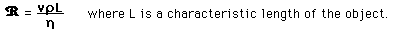
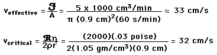

Turbulent FlowFlow descriptions such as Poiseuille's law are valid only for conditions of laminar flow. At some critical velocity, the flow will become turbulent with the formation of eddies and chaotic motion which do not contribute to the volume flowrate. This turbulence increases the resistance dramatically so that large increases in pressure will be required to further increase the volume flowrate. Experimental studies have characterized the critical velocity for a long straight tube in the form which depends upon the viscosity in poise, the density in gm/cm^3 , the radius of the tube in cm. The script R is an experimental constant called the Reynold's number. The reported Reynolds number for blood flow is about 2000. Modeling blood flow in the human aorta according to this criterion leads to the expectation of some turbulence in the center of the flow. |
Index Poiseuille's law concepts | ||
|
Go Back |
Reynolds NumberThe Reynolds number is an experimental number used in fluid flow to predict the flow velocity at which turbulence will occur. It is defined by the relationship:
for flow through a tube. Another approach is to define a variable Reynolds number in terms of the maximum velocity for laminar flow in a tube by
and characterize the condition for turbulence as the condition when the Reynolds number reaches a critical value like 2000. For a more general approach to turbulence when objects move through a fluid, the relation takes the following form: where |
Index Poiseuille's law concepts | ||||
|
Go Back |
Turbulent Flow in Aorta?Blood flow in the human body is remarkably free of turbulence , but sounds attributed to turbulence are sometimes detected by stethescope associated with the aorta. Modeling the flow makes use of the Reynold's number and the associated critical velocity. Assuming a nominal blood volume flowrate of 5 liters/min and a radius of 0.9 cm for the aorta: But when the velocity profile for tube flow is taken into account, it is found that the maximum velocity of flow is twice the effective value, so a velocity of 66 cm/s would be expected to produce turbulence in the center of the aorta. |
Index Poiseuille's law concepts | ||
|
Go Back |
Non-Newtonian FluidsFluids for which the viscosity is independent of pressure are called Newtonian fluids, and the flow of Newtonian fluids such as water are described reasonably well by Poiseuille's law so long as the conditions for laminar flow are met. The synovial fluid in joints such as the knee shows a decreased viscosity with increasing pressure (helping to lubricate the joints), and is said to be a non-Newtonian fluid. Departures from Poiseuille's Law may be substantial for suspensions and mixtures of fluids. Blood is a complicated fluid with many types of materials in solution and suspension and shows departures from Poiseuille's Law in small vessels. One explanation offered is that in small vessels the large red blood cells tend to accumulate in the faster axial part of the flow, so that there are fewer cells close to the walls to contribute to wall friction. In most blood vessels under normal ranges of blood pressure, the flow is well described by Poiseuille's Law. |
Index Poiseuille's law concepts | ||
|
Go Back |